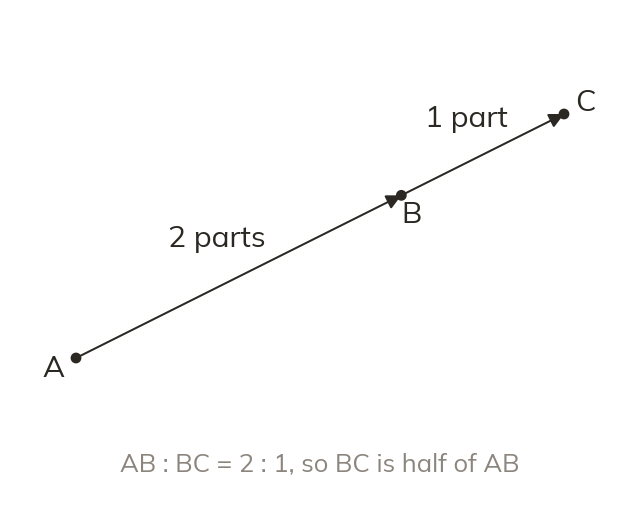
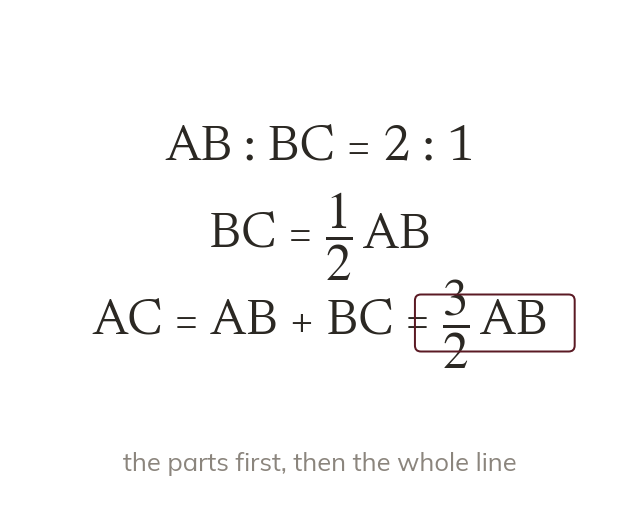
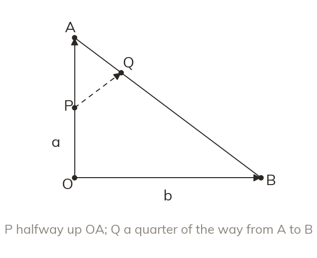
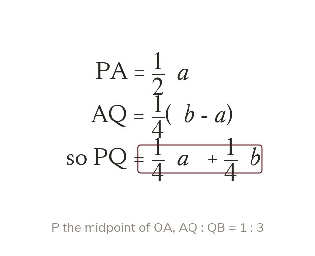

Carry on past B
A point beyond B continues in the same direction as AB. With AB : BC = : BC→ is half of AB→.
Exam vector questions often place points beyond the end of a line, or on two different sides of a shape. Today we combine those ratios into routes.
Work down the page at your own pace. Write every answer in your book first, then click to check it.
Read each card, then follow the worked examples one step at a time.

A point beyond B continues in the same direction as AB. With AB : BC = : BC→ is half of AB→.

The whole line AC is parts, so AC→ = ³⁄₂AB→. A ratio compares parts, not a part with the whole.
Pick an answer. If it's wrong, the feedback tells you which mistake it was.
Read each card, then follow the worked examples one step at a time.

Each point gets its own route from a vertex. The vector between two such points is then a route through a vertex.

A route through A gives PQ→ = PA→ + AQ→, two known pieces. The a terms and the b terms are collected last.
Pick an answer. If it's wrong, the feedback tells you which mistake it was.
Finished? Next lesson: 11H.8.7 Proving Lines Parallel.
Log in, then search for a code to practise that skill.
Videos, worksheets and more on each part of this lesson.